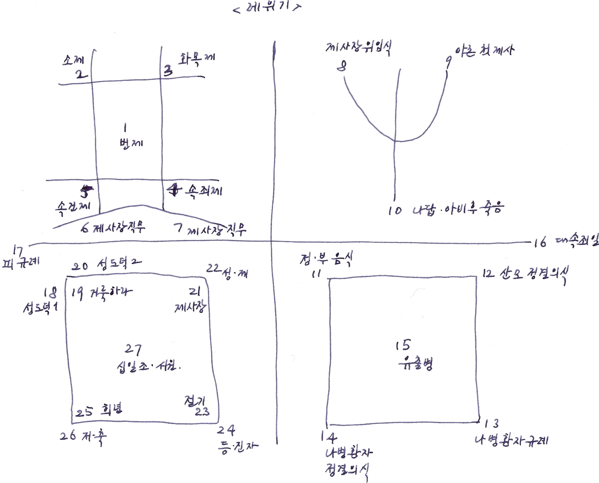

레위기 1;1-17, 12-21-2017 목요일
번제에 대하여
출애굽 중의 이스라엘 백성과 모세에게 하나님은 어떻게 하나님께 제사하며 그 백성을 구별되게 할 것인가를 가르치신다.
하나님의 가르치심에 대한 내용들.
1장은 번제(burnt offering)에 대해서
하나님께 예물을 드림
소, 양, 양, 염소, 산비둘기, 집비둘기 새끼
흠 없는 수컷
번제물로 드림, 여호와 앞에 기쁘시게 받으시도록
안수, 죄의 전가 (속죄)
피 흘림, 회막 문 앞 제단 사방에 뿌림.
가죽을 벗기고 각을 뜸
제단 위 불, 나무, 전부를 불사름 – 여호와께 향기로운 냄새로
하나님께 드리는 예물
흠없는 예물
죄를 용서받는 예물
하나님 앞에 기쁨과 향기가 되는 예물을 드리는 것임.
아주 명확한 목적은 나와있지 않음.
그러나 예물을 드려야 하는 것
그 예물을 다루는 것은 제사장의 몫임.
우리의 예물 되신 그리스도로 말미암아 감사.
레위기 2;1-16, 12-22-2017 금요일
여호와께 드리는 소제에 대하여 (Grain offering, food offering), (1) Fine
flour, (2) oil, (3) frankincense, (4) salt
고운 가루, 기름, 유향
화제로 드림
고운 가루 자체, 화덕에 구운 것, 철판에 부친 것, 냄비의 것
누룩과 꿀을 넣지 말 것 – 왜 넣지 말라고 했을까? 그 자체로 첫 열매? 변질이나 타락의 상징?
처음 익은 것으로 드릴 것
그 안에 소금을 칠 것 (언약의소금, salt of
covenant)
볶아 찧은 것
기념물로 불살라 하나님께 드리면 그것이 하나님 앞에 거룩하고 향기로운 제물로 올라갈 것임.
하나님께 정성스럽게 예물을 드린다.
기념과 소원함을 가지고.
레위기 3;1-17, 12-26-2017 화요일
화목제에 대하여 (Peace offering)
화목제의 제물과 번제의 제물이 매우 유사하나 조금 차이가 있음.
하나님과의 화목함을 위하여?
Burning of the fat - the best part of the
offering
가장 좋은 부분을 드리는 제사
번제가 여러가지 목적을 가지고 하나님께 드리는 제사였다면
화목제는 언약을 기억하는 백성들이 하나님과의 화목, 평화를 위하여 드리는
그 목적이 아주 뚜렷한 제사라 할 수 있음 (ESV study bible)
제물;
수컷이나 암컷이 가능
소, 양, 염소
흠 없는 것이어야 함.
새 종류가 없음.
피와 기름은 먹을 수 없음.
각을 뜬다는 말도 없음.
번제와 비슷하다고 생각했지만, 나름 여러가지 차이가 있음.
화제로 드리게 되어 여호와 앞에 향기로운 냄새로 올려지는 것임.
하나님과의 화목을 기억하며 살아가자.
우리의 평화이신 주님, 예수 그리스도를 기억하자.
매일 매일 수많은 짐승을 잡았겠지만, 한번 잡을 때에 부위를 나누어 합당한 제사를 따로 드린 것은 아닐까?
레위기 4;1-12, 12-27-2017 수요일
제사장의 속죄를 위한 제사
기름부음 받은 제사장의 범죄함에 대하여
제사장의 범죄는 백성의 허물이 됨.
흠없는 수송아지를 속죄 제물로
머리에 안수 – 죄의 전가
피 – 바르고 뿌리고 쏟을 것임
기름 – 번제단 위에서 불사름, 하나님 앞에 향기로 올려 드림
나머지 모든 것 – 진영 밖에서 태움. 남기는 것이 없음. 모두 태움.
죄의 씻음은 돌아감을 생각하지 않는다.
완전한 소멸이다.
주님의 죄사함은 완전한 소멸이다.
우리는 다시 같은 제사를 드릴 필요가 없다.
이제는 제사가 필요한 것이 아니라 회개가 필요하다.
돌이키는 마음과 결단, 결연한 의지가 필요한 것이다.
나의 죄 됨이 나에게만 영향을 미치는 것이 아니라 함께 하는 사람들에게 영향을 준다는 것을 기억하자.
결연한 의지
상심하지 않는 마음.
레위기 4;13-35, 12-28-2017 목요일
속죄제
이스라엘 온 회중의 죄악 – 수송아지, 회중의 장로들이 안수함.
족장의 죄악 – 흠 없는 숫 염소
평인의 한 사람의 죄악 – 흠 없는 암 염소, 혹은 흠 없는 암 어린 양
범한 죄를 누군가 깨닫게 해 줌,
스스로 깨닫지 못하는 경우가 많음
자신의 죄를 전가함. 혹은 대표자가 죄를 전가함.
제사를 드리는 방식은 동일함.
누구의 죄라도 속죄하고 용서를 받아야 함.
차별이 없음. 구별이없음.
만민에게 동일하게 역사하는 주님의 속죄를 감사함.
차별없는 완전한 제사를 드리신 것임.
구별되이 적용될 필요가 없는 완전한 제사.
흠없는 어린 양 되신 주님을 찬양합니다.
레위기 5;1-13, 12-29-2017 금요일
여러가지 죄의 모습에 대한 속죄제
저주의 소리를 듣고도 증인이 되어 말하지 않은 죄
부정한 것과 접촉한 죄
부정한 사람과 접촉한 죄
함부로 맹세한 죄 – 잘못하였노라고 자복해야 함.
속죄제와 번제를 같이 드리는 경우도 있음
제물은 – 암컷 어린 양 or 염소, 산비둘기 2 마리 or 집비둘기 새끼 2마리, 고운 가루 십분의 일 에바
화제로 불사름
허물을 위하여 속죄함 – 제사장을 통하여, 죄 사함을 받게 됨.
영원한 대제사장되신 주님 앞으로 나아가자.
드릴 예물이 없어 죄 사함을 받지 못하는 경우는 없음.
어떻게든 죄 용서받을 수 있는 길을 열어 주셨음.
주님은 제사장인 동시에 우리의 영원하고 완전한 속죄 제물이 되셨음.
이 세상에 그 누구도 죄 용서 받지 못할 사람은 없음.
주님 앞에 나오느냐 그렇지 않느냐의 문제일 뿐.
사람들에게 그런 기회를 제공해야 함.
말로, 행동으로, 그리고 삶으로.
레위기 5;14-6;7, 01-01-2018 월요일
속건제에 대하여
여호와의 성물에 대하여 부지 중에 범죄하였을 때 (15)
여호와의 계명을 부지 중에 범하였을 때에 (17)
여호와께 신실하지 못하여 범죄하였을 때에 (6;2,3) - 이웃의 것을 착취하고도 사실을 부인하거나, 남의 물건을 줍고도 거짓 맹세하는 경우
여호와 앞에 제물을 드리고 속죄해야 함.
흠 없는 숫 양으로
제사장에게 가져옴
여호와 앞에서 속죄함.
오분의 일을 드려 갚음.
하나님 앞에 속죄하고, 사람 앞에 동시에 속죄해야 함.
하나님의 것을 귀하게 여기고 부지 중에라도 범죄하지 않도록 근신하는 2018년이 되게 하소서.
레위기 6;8-30, 01-02-2018 화요일
번제의 규례 (8-13)
제단 위의 불이 꺼지지 않게 하라
소제의 규례 (14-18)
향기로운 기름으로 태움
제사장들로 하여금 먹게 함
누룩을 넣지 않음 – 누룩이 부정한 이미지로 보임
제사장의 임직에 대한 예물 (19-23)
소제를 올려 드리되 모두 드림.
남기는 것이 없고, 제사장이 취하는 것이 없음.
속죄제 규례 (24-30)
속죄의 예물을 잡고 제사장이 먹음 – 번제물 잡는 곳에서 잡은 속죄물에 대하여
성소에서 속죄하게 한 제물의 고기는 먹지 않음.
각각의 제사법이 조금씩 다르다.
제사를 통해 하나님께 속죄함 받고, 향기로운 제물을 올려드리며,
동시에 제사장으로 하여금 먹고 생활할 수 있게 한다.
예배를 통하여 하나님을 섬기고,
주님의 일들 감당하는 자들이 살아갈 수 있게 한다.
그것이 마땅하다.
주님을 섬기는 자들과 함께 좋은 것을 나누자.
주님을 바르게 섬기자.
예법과 마음이 모두 중요하다.
레위기 7;1-10, 01-03-2018 수요일
속건제의 규례
속죄제, 번제의 규례와 유사
기름을 하나님께 향기로운 제사로 태워서 올려 드림.
제사장이 먹고, 제물을 취함
가죽을 가짐.
소제물도 제사장이 취함
균등하게 분배함.
하나님의 사역을 하는 사람들이 취할 수 있음.
제사장은 스스로 자신을 위하여 살지 않기에 하나님이 공급하시는 것임.
하나님이 공급하시는 손길을 경험하면서 살아가도록 하자.
사람들에 대한 기대를 내려놓자.
레위기 7;11-21, 01-04-2018 목요일
화목 제물의 규례
감사함으로 드리는 경우
기름 섞은 무교병, 기름 바른 무교전병, 고운 가루에 기름 섞어 구운 과자 + 감사제물, 혹은 유교병 + 감사제물– 하나님께, 그리고 화목제의 피를 뿌린 제사장께 – 그 날에 먹을 것
서원이나 자원함으로 드리는 경우
그날, 그 이튿날까지 먹을 수 있되 3일째는다 태워야 함. 지키지않으면 잘못된 제사가 됨
깨끗한 자만 먹을 수 있음.
부정한 자가 먹는 경우 죽을 수 있음.
엄숙한 제사
규칙을 잘 지켜야 함. 엄위한 것임. 생명을전제로 함.
하나님과 성자 예수님께 드림.
우리의 예배를 엄위하게, 하나님안에서 드리기를 힘쓰자.
기름이나 누룩이 포함된다.
가장 좋은 것으로 하나님께 드리기를 힘쓰자.
레위기 7;22-38, 01-05-2018 금요일
동물의 기름이나 피를 먹지 말라
심지어 제물로 드린 짐승의 기름이나 피를 먹으면 죽는다.
화제물은 자신의 손으로 직접 가지고 온다.
기름과 가슴을 가지고 온다. 오른쪽 뒷다리는 제사장에게 드림.
레위 제사장의 소득
번제, 소제, 속죄제, 속건제, 위임식과 화목제의 규례 정리
시내산에서 주신 명령
하나님께 드리는 제사의 중요성
그 제사를 드리는 제사장의 역할의 중요성
하나님의 법대로
굶기지 않으시는 하나님, 먹을 것, 필요한것을 채우신다.
하나님께 영광이 되도록, 직분 맡은 자들이 살아갈 수 있도록, 자원하는마음으로 드림.
바른 예배를 드리기에 힘쓰자.
레위기 8;1-13, 01-08-2018 월요일
제사장을 세우는 규례
대상자; 아론과 그 아들들 (2)
준비물; 의복, 관유, 속죄제 (수송아지, 숫양, 무교병) (2)
참관자 ; 온 회중 (3)
장소; 회막 문 앞 (3)
과정
1.
깨끗하게하고 옷을 입힘, 속옷부터 겉옷까지
2.
흉패, 우림과 둠밈, 하나님의 뜻을 분별하는 것
3.
머리에 관을 씌움 – 거룩한 관
4.
관유 – 성막을 거룩하게 하고, 아론을 거룩하게 함.
5.
아론 뿐만 아니라 그의 아들들에게도 동일한 과정을 함.
누가 이 모든 일을 집전하였는가? 모세
하나님의 명령을 따라
하나 하나 순서에 맞게
하나님이 직접 말씀하심. 제사와 그것을 이루는 과정의 중요성
이 중요성은 지금은 예배의 중요성과도 일치하지 않을까?
예배와 하나님 앞에 나아가는 것의 중요성을 더욱 기억하자.
레위기 8;14-36, 01-09-2018 화요일
제사장 위임식 계속
속죄제 – 수송아지 (13-17), 피, 제단 뿔, 모두 불사름
번제 – 숫양 (18-21), 모두 불사름, 화제, 향기로운 냄새로 드림
위임식 – 숫양 (22-28), 향기로운 냄새, 아론과 그 아들들의 오른쪽 귓부리, 오른쪽 엄지 손가락과 발가락, 여호와 앞에서 요제로 삼는 부분이 있음. 모세의 분깃도 있음.
첫번째 제사가 모두 모세를 통해서 이루어지고 있음.
모세 언약 하나님의 첫번째 언약? 아브라함과의 언약이 첫번째 언약일까?
다윗 언약, 그리고 그리스도를 통한 성취
제사장의 옷에는 동물의 피와 기름이 덮여 있음. 수없이 덮였을 것임.
7일동안 회막 밖으로 나가지 않고 완전히 구별된 생활을 해야 함.
하나님 앞에서 거룩히 구별된 제사장의 모습으로 ..
세상과 담을 쌓으라는 것은 아니지만, 하나님과 바른 관계를 갖고 살아갈 것을 기억할 것.
레위기 9;1-24, 01-10-2018 수요일
제사와 하나님의 임재하심
아론과 제사장의 제사, 백성이 절차에 맞게 제사를 드림
그 가운데 하나님이 임재하사 제물을 사르시며 그의 존재를 현현하심.
백성들이 놀람.
모세가 불러 이제부터 제사장이 직접 제사를 드리게 함.
아론, 그의 아들들, 이스라엘 장로들
먼저 자신들의 죄를 속하고 (속죄제), 화목제, 소제, 번제를 드림 – 자신을 살피는 일을 우선으로 하자. 다른 사람이 하는 일, 그들을 정죄하는 것에 시간을 소진하지 말고
모세가 드린 모습을 그대로 함 – 모범을 따르는 것. 주님께 나아가는 것 뿐만 아니라 삶의 자리에서 선배들의 좋은 모습을 닮아 가도록 하자. Richard Mirsky의 본? ㅎㅎ
축복의 자리로 .. 주님께 제사하고 사람들을 축복하는 모습
주님의 복을 받은 사람은 그 복이 다른 사람들에게 흘러가도록 해야 함.
주님은 우리의 제사, 우리의 예배를 기뻐하시며 응답하신다.
주님의 응답받는 바른 예배 드리기를 힘쓰자.
레위기 10;1-11, 01-11-2018 목요일
잘못된 불로 제사한 나답과 아비후가 죽음
하나님 앞의 바른 제사의 중요성 – 잘못된 것으로 말미암아 죽임을 당하는 데 까지 나아간다.
아론과 제사장들은 그것으로 인해 애곡할 수 없다. 백성들이 대신 애곡해야 한다.
제사장 직분의 엄위함, 두려움을 느낄 수 있다 (아론이 잠잠함, 아비된 마음으로는 얼마나 기막히고 슬펐을까?)
제사를 드리는 것은 편하고 좋은 일만이 아니다.
죽음을 각오하고 드리는 것이다.
우리가 매일매일, 또 주일에 드리는 그 예배의 중요성을 깊이 생각하자.
제사장은 포도주와 독주를 마실 수 없다 – 그렇지 않으면 죽임을 당하게 된다.
그들이 제사할 때에 포도주와 독주를 마시는 경우 거룩하고 속된 것을 구별할 수 없으며 부정하고 정한 것을 분별할 수 없다 – 술을 멀리 해야 하는 이유가 아닐까?
하나님은 그저 우리가 알아서 잘 하기를 바라시는 분이 아니시다.
모세를 통하여 필요한 규례를 모두 알려 주신 주님이 이제는 성령 하나님을 통하여 이미 기록된 말씀으로 우리에게 말씀하시며 알려주신다.
믿음으로 확신한다.
레위기 10;12-20, 01-12-2018 금요일
레위 제사장의 분깃, 순종, 그러나 기계적 순종이 아닌 자발적 순종, 하나님을 의식하는 순종이어야 함.
레위 제사장들이 취할 것들
화제물 중 소제 남은 것 – 누룩을 넣지 말고 제사장이 취할 것
흔든 가슴, 들어올린 뒷 다리 – 정결한 곳에서 먹음. 제사장의 분깃
속죄제로 드린 염소를 모두 태웠음.
남은 것을 취하지 않았고, 거룩한 곳에서 먹지 않음.
바짝 신경이 곤두 서 있는 모세의 질책
하나님을 두려워하는 마음에 먹지 않고 제사로 올려 드린 아론(과 그 아들들)의 모습
하나님을 두려워 함 가운데 행한 것을 좋게 여긴 모세의 모습
하나님께 바르게 드려야 하는 예배의 중요성과 더불어,
그것이 기계적이고 아무런 생각없이 드리는 것이 아니라
하나님의 마음, 하나님의 성품을 생각하며 드리는 것이 중요함.
형식과 아울러 더욱 중요한 것은
예배 드리는 사람의 자세와 마음일 것임.
레위기에도 그런 것이 나옴.
레위기가 형식만을 강조한 것이 아님.
레위기 11;1-47, 01-15-2018 월요일
정한 것, 그리고 부정한 것
정한 것과 부정한 것의 구별
부정한 것의 전염성
45 나는 너희의 하나님이 되려고 너희를 애굽 땅에서 인도하여 낸 여호와라 내가 거룩하니 너희도 거룩할지어다
정하고 부정한 것들
정한 것 – 모든 짐승 중 굽이 갈라져 쪽발이 되고 새김질 하는 것, 이것을 만족하지 못하면 부정함
부정한 것 – 사반, 토끼, 돼지
물에 있는 것 중 정한 것 – 지느러미와 비늘이 있는 것
부정한 것 – 지느러미나 비늘이 없는 것
새 중 부정한 것 – 독수리, 솔개, 물수리, 말똥가리, 까마귀, 타조, 타흐마스, 갈매기, 새매, 올빼미, 가마우지, 부엉이, 흰 올빼미, 사다새, 너새, 황새, 백로, 오디새, 박쥐
곤충 중 부정한 것 – 네 발로 기어다니는 곤충
정한 것 – 날개가 있고 네 발로 기어다니는 곤충 중 그 빨에 뛰는 다리가 있어 뛰는 것 – 메뚜기, 베짱이, 귀뚜라미, 팥중이
땅에 기는 길 짐승 중 부정한 것 – 두더지, 쥐, 도마뱀, 도마뱀 붙이, 육지 악어, 사막 도마뱀, 카멜레온
주검도 만지지 말 것 – 모두 부정함
그것들이 접촉한 것들도 부정함
부정하게 된 것들로 인하여 자신을 더럽히지 말라 – 하나님이 정하다 하지 않는 것으로 자신을 더럽히지 않도록 하자. 하나님의 선한 것으로 자신을 채워가자.
우리는 하나님과 온전한 교제로 부르심을 받았다. 하나님의 거룩하심을 기억하며, 우리가 또한 하나님의 거룩하심을 본받도록 노력하자.
하나님이 꼼꼼하게 규례를 주셨다. 그것이 비록 세부사항으로 새롭게 되었으나, 주님이 우리를 향하시는 마음에 근본이 변화되었다고 생각되지 않는다. 하나님은 어제나 오늘이나 동일하신 분이시므로. 그러므로 주님 앞에 성화되는 삶, 거룩한 삶을 기억하고 추구하자.
12;1-8 [10-18-2011] 번제물, 속죄제물; 정결하기 위한 제물들 .. 산모 정결의식
하나님과의 영원한 언약 .. 태어나면서 부모로서 자녀가 하나님의 온전한 사람이 되길 기도하고 부모가 그렇게 먼저 하나님께 자녀를 올려 드려야 함 ..
하나님께 감사하며 올려드렸던 “부모선언문”을 기억하자. 아버지학교에서의 그 적용도 기억하자.
아이들이 유능한 사람이기에 앞서 하나님의 거룩한 사람이 되길 기도하자.
아이들은 나의 소유가 아닌 하나님이 나에게 맡기신 존재임을 되새김.
영적 자녀를 낳고 거룩한 하나님의 백성으로 올려 드리는 일에 집중하자.
레위기 12;1-8, 01-16-2018 화요일
자녀를 낳은 여인에 관한 규례
아들을 낳는 경우와 딸을 낳는 경우가 다름
남자 아이의 경우 8일째 할례를 행함 – 하나님의 언약 백성 인정
산모 규례 – 번제와 속죄제를 드림.
아마도 아이를 낳은 감사와 피흘림의 속죄제를 드려야 하는 것은 아닐지
어린 양, 집비둘기 새끼나 산비둘기로 제사를 드림, 그러나 그의 형편에 맞게 할 수 있음.
아마도 비둘기는 하나님이 주시기 않았을까?
하나님은 우리의 없는 중에 있는 것을 빼앗는 분이 아니심.
오히려 미리 공급해 주시는 분
왜 아들과 딸을 차별을 두었을까?
왜 속죄제가 필요했을까?
하나님이 우리에게 주신 것들로 인하여 감사의 예물과 더불어 감사의 예배를 드리자.
우리의 아이들로 인하여 더욱 감사하자.
레위기 13;1-59, 01-17-2018 수요일
나병(피부병)의 규례
사람에게 생긴 나병 – 뾰루지, 색점, 종기 근처, 불에 데었을 때에, 머리나 수염의 환부에, 옴, 어루러기, 대머리
정함과 부정함에 대해서 – 부정한 경우 진 밖에 살아야 함.
그러나 함부로 판단하지 않음. 최대 2주의 시간을 두고 판단함. 자세한 관찰을 거쳐 결정을 내림.
의복, 가죽에 생긴 나병의 증상에 대해 – 깨끗하게 빨고, 그럼에도 불구하고 없어지지 않는 경우 불에 태워 없앰.
전염성이 있는 것들.
부정한 것에 대한 하나님의 규례.
정결함을 원하시는 하나님.
그러나 함부로가 아닌 신중함 가운데 판단하고,
판단이 완료된 그 시점에는 단호한 격리나 불태움이 있음.
거룩하신 하나님 앞에 거룩한 삶으로 나아가자.
레위기 14;1-32, 01-18-2018 목요일
나병 환자의 정결 규례
8일 동안에 걸친 정결규례
진영 밖에서, 장막 밖에서, 그리고 후에 진영 안으로
첫날, 일곱째날, 여덟째날
제물을 어떻게 드릴 것인가?
자신의 몸을 어떻게 깨끗하게 할 것인가?
먼저 자신을 살펴 깨끗하게 하고, 하나님 앞에 제물 (예배) 드림.
판단은 제사장이 함.
새 두 마리 – 하나는 희생 제물, 다른 하나는 날려 보냄 (상징적 의미가 있어 보임)
장막 밖에서 일주일을 기다림
깨끗하게 함 – 모든 털을 밀고, 옷을 빨고, 몸을 씻음.
여덟째 날 – 제사 드림, 속건제, 속죄제 (번제와 소제로)
정한 제사의 제물이 있으나 그 힘이 미치지 못하면 부족한 대로 드릴 수 있음.
필요한 길을 열어 놓으시는 하나님.
하나님은 우리가 정결하게, 거룩하게 하나님 앞에 나오길 원하심.
레위기 14;33-57, 01-19-2018 금요일
집에 발생한 나병에 관한 규례
특징적으로 느껴지는 것은 집에 대하여 발병하는 것이 사람에 대하여 발병하는 것과 거의 동일한 방법으로 적용이 된다.
진단하는 것, 처리하는것, 정하다고 결정하기 위해 드려지는 것들이.
왜 하나님은 사람에 대해서만 적용하시지 않고 의복과 집에 대해서도 그렇게 적용하셨을까?
원인이 되는 것을 근본적으로 정하게 하기 위해서
영향력이 있다. 최종의 피해는 사람이 보는 것.
전염성이 있는 것.
사람을 보호하시려고 그렇게 하신 것 같다. 그 백성을 보호하기 위해서.
죄의 영향력에서 우리가 멀어지고 보호되길 원하시는 하나님이라 판단됨.
우리가 깨끗함 (육체적, 정신적, 그리고 영적으로) 가운데 살아가길 원하시는 하나님으로 여겨짐.
감사함.
레위기 15;1-18, 01-20-2018 토요일
유출병있는 사람에 대하여
그것에 접촉하는 모든 것에 대하여 ..
설정한 자에 대하여
부정함과 정함으로 ..
어떻게 깨끗하게 할 것인가?
여전히 전염적 부정에 대하여 말씀하고 있다고 여겨진다.
정결하고 깨끗함을 원하시는 하나님.
자신을 깨끗하게 할 뿐만 아니라 다른 곳으로부터 오는 부정함을 인식하고 보호할 필요가 있다.
레위기 15;19-33, 01-22-2018 월요일
유출로 인한 부정에 대해
여인의 월경 중 부정에 대해
그리고 정하게 하는 방법에 대해 설명하고 있음.
토요일의 내용과 크게 다르지 않음.
목적 ; 그들을부정에서 떠나게 하고 하나님의 성막을 정결하게 하며 부정으로 인해 죽지 않게 하기 위해
거룩하신 하나님 앞에 거룩한 삶을 유지할 수 있도록
육신의 거룩함 뿐만 아니라 영의 거룩함, 마음의거룩함을 유지하고 이루어가야 함.
주님, 마음을잘 다스릴 수 있도록 인도하여 주옵소서.
레위기 16;1-34, 01-23-2018 화요일
일년에 한번 드리는 속죄일에 관한 규례
아론이 일년에 한번 성소의 휘장 안 법궤 위 속죄소 앞에 들어가는 날 (2)
속죄물 – 수송아지, 번제물 – 숫 양 (3)
세마포 옷 – 거룩한 옷을 입고 (4)
이스라엘 자손을 위한 속죄 제물 (숫 염소 두마리), 번제물 (숫 양 한마리)
아론 (대 제사장) 자신을 (그리고 집안을) 위한 속죄 제물 (수송아지)
두 염소 – 회막 문 여호와 앞 – 한 염소는 여호와 하나님을 위하여, 한 염소는 아사셀(? 그 의미가 명확치 않음. 마귀를 상징하거나 특별한 장소를 상징하거나 혹은 ez + azel = goat + go
away, 죄를 지고 멀리 떠나 보내는 염소를 의미함)을 위하여
아사셀을 위한 염소 – 광야로감 (10)
속죄소 안에서 행해야 할 일들 – 연기와 피로 주님 앞에 나아감. 기도와 속죄의 제물로
분명히 피로 죄 값을 치르어야 하는 것이 하나님이 세워 놓으신 방법임. 왜냐하면 피는 생명을 상징하기 때문에.
그리하여 거룩하게 함.
염소가 그들의 모든 불의를 지고 (22), 아사셀을 위하여 광야로 내 보냄.
안식일 중의 안식일 – 안식일은 그냥 쉬는 날이 아닌 우리의 죄를 씻어 내는 날
주님을 만나는 주의 날은 나의 죄를 씻기는 날인 동시에 하나님과 나 사이의 관계를 새롭게 확인하는 날, 복된 날이 되어야 함.
하나님 앞에서 영원히 지켜야 할 날
주님과의 관계를 날마다 회복하고, 특별히 공동체 가운데 회복하게 하는 날인 주일을 더욱 귀하게 지키자.
레위기 17;1-16, 1-25-2018 목요일
짐승을 잡는 경우, 피와 생명
먼저 회막 문으로 끌고 가서 여호와의 성막 앞에서 여호와께 예물로 드리라 – 하나님 우선, 십일조도 마찬가지, 내가 드리는 헌금이 그러하다.
얼마나 중요하냐면, 여호와께 드리지 않으면 그 백성 중에서 끊쳐진다 – 곧 죽는다.
죽음을 각오하고 헌금을 드려본 적은 없다.
그러나 그 중요성을 더 깊이 이해해야겠다.
피를 먹지 말라
왜냐하면 육체의 생명이 피에 있기 때문에
피로 속죄한다.
생명이 피에 있으므로 피가 죄를 속한다 (11)
모든 생물은 그 피가 생명과 일체다 (14)
그리스도의 생명, 그리스도의 피로 말미암아 구속 곧 죄사함을 받았고, 그의 죽으심, 장사, 부활로 인하여 구원 받은 백성되게 하심을 다시한번 감사한다.
레위기 18;1-30, 1-26-2018 금요일
그 땅을 거룩하게 지키는 법
하나님의 법도, 하나님의규례를 지키는 것
이전에 살던 애굽 땅의 풍속이나 가나안 땅의 풍속과 규례를 따르지 않는 것 (3)
이 세대를 본받지 말고 오직 마음을 새롭게 함으로 변화를 받아
하나님의 선하시고 기뻐하시고 온전하신 뜻이 무엇인지 분별하여 … (롬 12;2)
하나님의 규례와 법도를 지키며 사는 것이 생명을 바르게 유지하는 가장 확실한 방법임.
거룩하게 사는 것
근친 간 결혼이나 성 관계를 금지함
동성간의 성관계 금지
수간 금지
이방신에게 자녀를제물로 바치는 것 금지
문제는 가나안 땅의 이전 사람들이 이러한 범죄를 저질렀음.
이 세대에 이런 사람들이 있음.
그 땅이 그것을 견뎌내지 못하고 그들을 토하여 내침.
이것은 지금도 마찬가지일 것임.
말과 행동 모두 조심.
더욱 우리 안에 거하시는 성령으로 인하여 높은 기준을 가지고 살아가길 힘쓰자.
주님이 구원하여 주신 백성답게 ..
레위기 19;1-10, 1-27-2018 토요일
하나님이 거룩하시니 너희도 거룩하라
거룩의 이유 ; 하나님이 거룩하심, 우리는 하나님의 백성, 하나님이 우리가 거룩하길 원하심
거룩함의 모양
부모를 경외함
하나님의 안식일을 지킴
우상 숭배하지 않음.
화목제물을 지킴 - 예물을 드리는 것도 정한 규례에 맞게 거룩하게 드림, 심지어 예물을 드렸음에도 불구하고 죽을 수 있음.
곡식을 주울 때에 가난한 사람과 거류민을 생각할 것 - 고아와 과부를 생각하는 마음과 동일, 다른 사람을 생각하는 것 특별히 어려운 사람을 생각하는 것.
구약과 신약은 그 정신이 다르지 않음.
이것들이 하나님일 말씀하시는 거룩의 모양으로 여겨짐.
주님의 뜻을 따라 가는 것, 그렇게 사는 것이 사명자의 삶이라고 여겨짐.
레위기 19;11-22, 01-29-2018 월요일
거룩한 삶의 규례들 (연속)
도둑질 하지 말 것, 속이지 말 것 (거짓말하지 말 것)
하나님의 이름으로 거짓 맹세하지 말 것
이웃을 억압하거나 착취하지 말 것 (품꾼의 삯을 가지고 있는 것은 잘못)
장애인을 무시하지 말 것 – 하나님을 경외할 것
공의로 재판할 것 – 불의를 행하지 말고, 가난하다고 편을 들거나 세력이 있다고 두둔해서는 안됨
돌아다니며 다른 사람을 비방하지 말 것, 이웃의 피를 흘려 자신의 이익을 도모하지 말 것
형제를 마음으로 미워하지 말 것, 이웃을 견책할 것
원수를 갚지 말 것, 동포를 원망하지 말 것
이웃 사랑하기를 네 자신과 같이 할 것 (18) – 이미 구약에 명확히 기재되어 있음.
주님, 아직도 마음으로 용납하기 어렵습니다. 도와 주소서. 요즈음 이것으로 많은 경책을 받고 있으나, 마음으로 먼저 나아가기 어렵고 두렵고 다시 거절당할 것이나 반복될 것에 대한 염려가 있음을 고백함. 그들이 변화되지 않는 것을 그대로 받아들이기 어려움. 더 넉넉히 이길 수 있는 믿음과 용기를 허락하시길.
가축을 다른 종류와 교미하지 말 것, 종자를 섞어 뿌리지 말 것, 두 재료로 한 옷을 직조하지 말 것
다른 여인을 (해방되지 못한 여인) 범하는 것도 분명 죄이나 제물을 드려 용서받을 수 있음.
섞이는 것을 구별하고 금지하시는 하나님
순수하지 못한 것을 금하신다.
정결하고 순결하길 원하시는 분이 곧 하나님이심.
마음과 몸으로 더욱 순결히 살아갈 것을 다짐해야 함.
레위기 19;23-37, 01-30-2018 화요일
거룩한 삶의 규례들 (연속)
새롭게 들어간 땅에서의 수확 - 3년을 기다리고, 4년 째 주님께 먼저 드리고, 5년 째부터 먹음. 정결해지기를 기다리고 하나님께 먼저 드리는 모습
피를 먹으면 안됨 – 생명의 규례
점, 술법, 머리 가를 둥글게 깎는 것, 수염 끝 손상, 문신, 창녀가 되는 것, 신접한자, 박수 (이것을 추종하는 것은 스스로를 더럽히는 것임. 사울 왕이 이런 죄를 범하였음) – 금지하심
안식일, 성소를 귀하게 여김
노인을 공경함, 하나님을 경외함
거류민을 귀하게 여길 것 – 우리가 그러했음. 현재의 내가 우리의 가족이 그러함.
재판을 공정하게 행해야 함. 치우침이나 거짓이 있으면 안됨.
이것들이 하나님의 규례와 법도를 지키는 것임.
율법의 형식적 요소와 정신이 있음. 잘 분별하여야 함.
그러나 기본적인 율법의 정신 – 하나님을 사랑하고 이웃을 사랑함 – 을 버릴 수 없음. 여전히 유효함.
레위기 20;1-27, 01-31-2018 수요일
거룩한 삶을 살지 않은 결과, 우리는 왜 거룩한 삶을 살아야 하는가?
거룩한 삶의 규례들을 주신 하나님이 그렇게 살지 않은 결과를 말씀하신다.
우상을 숭배하고, 음란한 삶을 사는 것의 결과는 “죽음” (백성 중에서 끊쳐지는 것)이다.
왜 이렇게 하나님은 우리에게 거룩을 요구하시는가?
하나님이 거룩하시기 때문이다 (7)
하나님이 우리를 거룩하게 하시기 때문이다 (8)
우리를 하나님의 소유 삼으시기 위해 만민 중에 구별하여 부르셨다 (26)
우리에게 요구하시는 것은?
스스로 깨끗하게 하여 거룩하라 (7)
하나님의 규례를 지켜 행하라 (8)
모든 규례와 법도를 지켜 행하라 (22)
이전 족속의 풍속을 따르지 말라 (23)
하나님 앞에서 거룩하라 (26)
애써 거룩한 삶을 연습하고 수고하도록 하자.
레위기 21;1-15, 02-01-2018 목요일
아론의 자손 제사장들이 지킬 규례들
시체로 인하여 부정해 지지 않도록 주의 할 것 – 다만 가족은 가능함.
백성의 어른으로 인정 – 그러므로 더럽히지 않도록 할 것
자신의 몸을 거룩하게 하고, 자신을 통하여 하나님의 거룩하심이 드러나도록 할 것
부정한 여인을 취하지 말 것
하나님이 거룩하시기 때문에
대제사장은 더 거룩해야 함 – 심지어 가족이 죽임을 당할지라도 자신의 직분을 수행하여야 함.
깨끗한 여인과 결혼해야 함.
삶의 모든 부분에서 하나님과 바른 관계, 정결한 관계를 갖고 살아야 함.
아무 일이 없던 것처럼 지내기는 어렵고, 그렇다고 완전히 회복되길 기대하는 것이 어려운 이 때에 나는 내가 보통 다른 사람을 대하듯 그를, 그 아내를 대할까 합니다. 안될까요?
레위기 21;16-24, 02-02-2018 금요일
흠이 있으면 하나님 앞에 나아가지 못함. 하나님의 일을 전담하여 감당할 수 없음.
육체적인 흠결이 있는 경우
날 때부터 그렇다면 그 사람이 책임이 아님에도 차별을 받는 것은 아닐까?
상징적인 의미가 있을까?
하나님 거룩의 견고한 적용?
받을 수는 있으나 드릴 수는 없음. (책임을 감당할 수 없음)
책임을 감당한다는 것이 얼마나 감사한 일인가?
나에게 주어진 일들을 거룩함 안에서 잘 감당하도록 하자 !
두렵고 떨림으로
레위기 22;1-16, 02-05-2018 월요일
거룩한 제사의 성물을 먹을 수 있느냐, 없느냐의 문제에 대해
레위 제사장 자손들에게 – 스스로를 구별하라. 거룩하라. 하나님의 이름이 욕되지 않도록.
몸이 부정하거나,
자신을 부정하게 하는 일에 접촉된 경우
하나님의 제물을 속되게 함으로 말미암아 죄를 짓고 그 가운데 죽을 수 있음.
일반인, 제사장의 객, 품꾼은 성물을 먹지 못함.
제사장의 딸의 경우 두 가지로 나뉠 수 있음.
음식을 먹는 것에 있어서도 거룩함의 개념이 적용됨.
하나님의 음식을 거룩히 먹을 것을 말씀하심.
하나님께 드리는 예물, 하나님의 것을 귀하게 여기는 마음이 있어야 함.
일상의 삶에서 정결함을 추구해야 함.
레위기 22;17-33, 02-06-2018 화요일
하나님께 온전한 예물을 드리라.
하나님께 드리는 제물의 온전함을 위하여
불량한 것, 상한 것, 정상이 아닌 것을 드리는 것은 하나님이 받지 않으신다.
지금의 예배는 제물을 드리는 예배는 아니지만,
우리의 내면이 정상적인 상태로 주님께 드려져야 함을 본다.
왜냐하면 우리가 살아 있는 제물, 산 제물이기 때문에.
하나님께 깨끗한 마음과 정성으로 예배하는 삶을 살아가자.
서원 제물과 자원 제물의 차이가 있을까?
무언가 하나님께 소원을 두고 다짐을 당부하는 제물이 더욱 정결하고 정상이어야 함을 본다.
레위기 23;1-22, 02-07-2018 수요일
여호와의 절기 – 안식일, 유월절, 무교절, 칠칠절(초실절?, 오순절)
안식일 – 매주 일곱째 날, 아무일도 하지 않음.
유월절 (1.14) – 첫째 달 열나흩날 저녁
무교절 (1.15~22) – 열 닷샛날 부터 이레동안, 무교병을 먹음, 성회로 모임, 아무 노동도 하지 않음. 화제를 드림
칠칠절 – 곡물의 첫 이삭 한 단을 제사장에게 가져감. 제사장은 그것을 하나님 앞에서 흔들어 요제로 삼음. 일 년된 흠없는 숫 양을 드림 (번제), 소제도 드림, 예물을 드릴때까지 곡물을 먹지 않음. 안식일 이튿날(일요일)부터 일곱 안식일의 수효를 채우고 (칠칠) 일곱 안식일 이튿날을 합하여 (50일) 이후 새 소제를 하나님께 드림 (첫 요제로), 일년된 흠없는 어린양 7 마리, 어린 수소 1 마리, 숫양 2 마리 번제로 드림. 숫 염소 1 마리 속죄제로 드림, 일년된 어린 숫양 2 마리 화목제물로 드림. 첫 이삭의 떡과 이 두 마리 양을 여호와 앞에 흔들어 요제로 삼음 – 여호와께 드리는 성물들. 성회의 날(50일 째, 오순절?) 아무 노동도 하지 않음.
주님 앞에 곡물의 감사를 드림에 있어서도 피의 제사가 동일하게 수반됨.
하나님 앞에 거룩하게 드려져야 하기 때문임.
어떠한 감사와 예배 가운데에서도 주님의 피, 예수 그리스도의 은혜가 없이는 안 되는 것임.
늘 이것을 기억하며 감사하도록 하자.
곡물을 벨 때에 다 베지 않음 – 가난한 자와 거류민을 위해 남겨 놓음. 하나님의 성회를 준비함에 있어 이웃을 생각하는 모습이 나타남. 하나님의 일을 한다 하여 다른 사람을 무시하거나 고려하지 않는 것이 아님.
절기를 주신 이유 – 하나님의 은혜를 기억하고, 기념하며, 감사하기 위하여.
주일마다 이것을 기억하도록 하자.
23;15-22 [12-12-2011] 가난한 자와 거류민을 위하여 .. 절기
하나님을 향하여 갖어야 하는 모습
하나님을 예배하는 자들이 사람들을 향하여 갖어야 하는 모습들
마음 속에 여전히 앙금되어 남아 있는 불신, 분노.. 생각할 때마다 치밀어 오르는 화 ..
그 분노의 영역이 조금씩 넓어지는 것 같은 느낌과 생각들 ..
올 해 계속해서 이 짐을 지고 가야 하는 것인가?
어떻게 해결할 수 있나?
누군가에게? (안 목사님께?) 도움을 요청
직접적인 화해? 이 후는? 계속 빠질 수 있나?
다른 곳으로의 요청 or moving? 이것은 거의 불가능한 일이라고 여겨짐.
지은, 영은의 아픔이 사라지고 깨끗하게 치유되길 ..
레위기 23;23-44, 02-08-2018 목요일
여호와의 절기 – 나팔절, 속죄일, 초막절
나팔절 (7.1) – 일곱째달 첫날, 나팔을 불어 기념함, 노동하지 말 것, 화제를 드림.
속죄일 (7.9~10) – 일곱째 달 열흘날, 스스로 괴롭게 함, 화제를 드림. 일을 하지 않고, 스스로 괴롭게 해야 하며 아무 노동도 하지 말아야 함. 이것도 일종의 안식일 임, 아흐렛날 저녁부터 지킴.
초막절 (7.15~22, 23) – 일곱째 달 15일, 일주일 동안 지킴. 성회로 모이고 노동을 하지 않음. 화제를 드림, 일주일을 지킨 뒤 첫날 (8일째 되는 날) 성회로 모임, 화제를 또 드림. 이것은 토지 소산을 거두기를 마치고 모이는 성회이자 절기임. 초막에 거주하는 이유는 출애굽 시 하나님의 인도하심을 기념하기 위한 것임.
여호와의 절기에 성회로 모이고, 아무일도 하지 않으며, 번제, 소제, 희생제물, 전제를 각각 드림.
하나님이 모세를 통하여 이 모든 절기를 알게 함.
1월에 절기를 드리고, 반년이 지난 후 7월에 또한 절기를 지냄.
일정하게 하나님이 하신 일을 기억할 필요가 있음.
특별한 날로 모이게 하시는 이유들이 있음.
하나님의 은혜를 잊지 않는 삶이 되길.
레위기 24;1-9, 02-09-2018 금요일
성막 안에 올려 놓아야 할 것들 – 등잔불, 떡 (진설병), 그리고 유향
등잔불 – 감람(올리브)을 찧어낸 순결한 기름으로, 회막 안 증거궤 휘장 밖, 항상 켜져 있어야 함.
진설병 – 고운 가루, 12개, 십분의 2 에바 / 각 덩이, 순결한 상 위에 두 줄로 (여섯씩) 진설함. 안식일마다 진설함. 이스라엘 자손을 위한 것. 아론과 그 자손이 거룩한 곳에서 먹어야 함. 지극히 거룩한 떡임. 나중에 다윗이 도망자의 삶의 시작하면서 아히멜렉 제사장 앞에 나아갔을 때 아론의 자손이 아님에도 불구하고 이 떡을 먹었음. 죽지 않았음. 목적은 죽이는 데에 있지 않고 살리는 데에 있음. 왜냐하면 이 떡은 근본적으로 이스라엘 백성을 위한 것이기 때문에. 아히멜렉 제사장은 그것을 알았음. 떡의 참 의미를 알았음. 예수 그리스도가 생명의 떡이심. 사람을 살리시는 참 떡이심.
정결한 유향 – 진설병 각 줄 위에 둠, 여호와 앞의 화제
하나님은 우리에게 생명을 주시기 위해 우리를 거룩하게 하시고, 거룩한 삶을 유지하기 원하심.
하나님의 우리를 향하신 뜻과 그 의도를 잘 알고 있어야 함.
생명의 떡 되신 주님으로 인하여 감사.
생명의 말씀으로 날마다 채울 수 있기를.
빛, 떡, 그리고 향기 .. 그리스도와 그리스도인의 삶을 기억할 수 있음.
레위기 24;10-23, 02-12-2018 월요일
복수법
하나님의 이름을 저주한 자, 하나님의 이름을 모독한 자, 사람을 죽인 자 (고의로) – 죽음으로 갚아야 함
짐승을 죽인 자 – 짐승으로 갚아야 함.
상처에는 상처로, 눈에는 눈으로, 이에는 이로 – 입힌 대로, 더하지 말고
거류민, 본토인 동일하게 적용
잔인한 법이라기 보다 공의로운 법으로 여겨짐.
상처받은 사람은 더 큰 상처로 갚아주길 바라는 법.
그러나 하나님은 그것을 허락하지 않으심. 공의롭게 행하길 원하심.
하나님의 이름을 망령되이 일컬어서는 안됨.
더 주의하고 더 기도하자.
레위기 25;1-13, 02-13-2018 화요일
땅의 안식년, 안식년의 최고봉 희년
가나안 땅에 들어간지 매 7년마다 안식년을 지킴 – 경작하지 않음. 자연적으로 땅에서 열매를 맺게 함.
49년째 7월 10일 속죄일을 마친 후
7번의 안식년을 마치고 (49년) 50년 째 희년을 보냄 – 모든 주민에게 자유를 공포함, 각자 자기의 원래 소유지로, 자기의 가족에게로 돌아감. 기쁨의 해, 돌아가는 해임. 거룩한 해 임.
이 희년에도 경작하지 않음. 49년째, 50년째에는 2년 연속으로 경작하지 않음 – 하나님이 채워주심. 하나님만을 전적으로 의지하는 것을 의무화함. 희년을 제대로 지켰다는 이야기를 성경에서 찾아볼 수 없음. 일상화된것일까? 아님, 제대로 지키지 못한 것일까? 인간의 죄와 악함 때문에?
매일 매일 하나님이 채워주시는 은혜와 거룩함으로 살아가자.
매일 매일 하나님을 기념하자.
레위기 25;14-34, 02-14-2018 수요일
토지 거래에 대하여, 부가하여 가옥의 거래에 있어서 지켜야할 규범들 – 희년 제도와 연결됨.
토지 거래의 가장 중요한 원칙 – 정직, 그리고 모든 토지의 주인은 하나님이심. 우리는 그것을 맡아 관리하는 것임. 우리는 하나님의 땅에 동거하는 것임.
정직한 거래, 공정한 거래
토지에 대한 영원한 거래는 없음 – 무르거나 희년에 돌려 주거나
가옥의 거래에 있어서 – 성벽으로 둘러싼 가옥의 경우 1년 이내에 무르거나 영원히 무르지 못할 수 있음. 성벽으로 둘러쌓이지 않은 가옥의 경우 무르거나 희년에 돌아가게 됨.
레위인의 가옥의 경우 언제라도 무를 수 있음. 토지는 거래하지 않음
형제를 위해 무를 수 있음. 자신이 다시 무를 수 있음.
기한을 기준으로.
정직하게 행하는 것이 하나님을 경외하는 모습임.
안식년 (매 7년) 소출에 대해 두려워하지 말라 – 하나님이 넉넉히 채워 주신다. 3년치를 채워 주신다. 부족한 1년만 채워 주시는 것이 아니다. 모든 날을 계수하며 우리의 형편을 아시는 하나님이 우리의 필요를 채우신다. 하나님이 주권자, 하나님이 주관자 이심.
정직한 거래가 되게 하여 주옵소서.
성은이와 우리가 바르고 결단력 있는 판단을 내리고 추진할 수 있게 하소서.
레위기 25;35-55, 02-15-2018 목요일
종을 삼는 것 – 속전, 유대인과 이방인
가난한 자에게, 같은 민족인가, 다른 민족인가?
속전, 희년
부리는 종이 아닌 형제와 자매로
형제를 위하여 속전할 수 있음.
희년에 돌아가게 하여야 함 – 근본적으로 사람의 소유가 아닌 하나님의 소유(하나님의종)이기 때문에.
노예 제도를 인정하는 것인가? 그 시대의 모습을 인정하시는 것이지, 노예 제도를 인정하신다고 하기 어려움. 근본적으로 하나님은 모든 사람을 사랑하시고, 모든 사람의 존귀함을 말씀하심.
구별된 백성의 개념 – 차별같이 보이나, 이 시대에는 분명히 유대인과 이방인의 구별이 있었음.
이 시대에 다른 사람을 억압하는 차별은 아니나 우리에게 구별된 삶을 원하신다.
어려움 중에 있는 형제를 돕는 것 – 이자를 받기 위해, 이익을 남기기 위해 하는 것이 아님.
순수한 마음으로 다른 사람들을 돕는 자리에 나아가길 힘쓰자.
레위기 26;1-13, 02-16-2018 금요일
하나님의 법에 순종하면 ..
신명기 28장의 말씀과 같은 느낌을 받음
우상을 만들지 말고, 안식일을 지킴
하나님의 규례와 계명을 준수하면 ..
비, 산물, 열매, 포도, 배불리 먹음, 안전하게 거함.
평화, 두렵게 할 자가 없음. 사나운 짐승도 제하여 짐.
원수들을 쫓아내고 칼 앞에 엎드리게 됨.
번성, 창대, 언약을 이행하심.
묵은 곡식을 치우고 새 곡식을 먹음.
성막을 세우고, 주님의 백성을 좋아하심.
하나님, 백성
애굽 땅에서 인도하신 하나님을 찬양
안정과 평화의 삶을 살게 하시는 하나님 – 우리가 하나님의 법, 하나님의 뜻에 순종하길 원하신다.
좋은 것으로 약속하시고 채우시는 하나님.
주님 안에서 온전히 살게 하소서.
레위기 26;14-46, 02-19-2018 월요일
그러나 하나님의 법에 순종하지 아니하면, ..
하나님을 청종하지 않고, 그 명령을 준행하지 않으며, 규례를 멸시하고 ..
재앙 – 폐병과 열병, 생명이 쇠약하게 됨. 파종한 것이 헛되게 됨. 대적이 그것을 먹기 때문에
대적에게 패하고, 그들이 다스리고, 정작 자신들은 도망하게 됨.
돌이키지 않으면 7배나 더 징벌하심.
교만을 꺾으심, 수고가 헛되고 열매를 맺지 않음.
청종하지 않으면 7배나 더 재앙을 내리심.
들짐승을 보내서 자녀, 가축을 죽임. 수효를 줄임, 길들이 황폐함.
하나님께 돌아오지 않고 대항하면 7배나 더 치심.
칼로 언약어긴 원수를 갚으심. 염병을 보내고, 대적의 손에 넘기심. 기근.
청종하지 않고 대항하면 7배나 더하심.
아들의 살, 딸의 살을 먹고, 산당-분향단을 부숨, 시체를 우상에게 던지고 싫어하심. 황폐, 황량, 제물의 거부, 황무, 원수들이 놀랄 정도로 망하게 됨. 민족 중에 흩고, 칼이 따르고, 성읍이 황폐하게 됨. 원수의 땅에 살게 됨, 덕분에 땅은 안식을 누림. 원수의 땅에서 약하게 됨. 여러 민족 중에서 망하게 됨. 쇠잔하게 됨.
하나님을 거스른 잘못 때문에.
점점 더 깊어지는 징벌, 결국 원수의 손에 넘겨지는 것이 가장 극한 형벌이 되는 것임.
이스라엘은 결국 이 모습까지 가게 되었음.
형벌을 달게 받으면 완전히 망하게 하지 않으시고, 회복시키심.
돌이키는 자에게 구원을 베푸시는 하나님.
하나님의 목적은 심판에 있지 않고 구원에 있음.
하나님의 심판의 날에 앞서 돌이켜 하나님의 뜻을 깨닫고 따르는 것이 가장 중요함.
우리 하나님이 심판자이시자 주관자이심을 기억하자.
순종, 순종, 순종.
레위기 26;14-46, 02-19-2018 월요일
그러나 하나님의 법에 순종하지 아니하면, ..
하나님을 청종하지 않고, 그 명령을 준행하지 않으며, 규례를 멸시하고 ..
재앙 – 폐병과 열병, 생명이 쇠약하게 됨. 파종한 것이 헛되게 됨. 대적이 그것을 먹기 때문에
대적에게 패하고, 그들이 다스리고, 정작 자신들은 도망하게 됨.
돌이키지 않으면 7배나 더 징벌하심.
교만을 꺾으심, 수고가 헛되고 열매를 맺지 않음.
청종하지 않으면 7배나 더 재앙을 내리심.
들짐승을 보내서 자녀, 가축을 죽임. 수효를 줄임, 길들이 황폐함.
하나님께 돌아오지 않고 대항하면 7배나 더 치심.
칼로 언약어긴 원수를 갚으심. 염병을 보내고, 대적의 손에 넘기심. 기근.
청종하지 않고 대항하면 7배나 더하심.
아들의 살, 딸의 살을 먹고, 산당-분향단을 부숨, 시체를 우상에게 던지고 싫어하심. 황폐, 황량, 제물의 거부, 황무, 원수들이 놀랄 정도로 망하게 됨. 민족 중에 흩고, 칼이 따르고, 성읍이 황폐하게 됨. 원수의 땅에 살게 됨, 덕분에 땅은 안식을 누림. 원수의 땅에서 약하게 됨. 여러 민족 중에서 망하게 됨. 쇠잔하게 됨.
하나님을 거스른 잘못 때문에.
점점 더 깊어지는 징벌, 결국 원수의 손에 넘겨지는 것이 가장 극한 형벌이 되는 것임.
이스라엘은 결국 이 모습까지 가게 되었음.
형벌을 달게 받으면 완전히 망하게 하지 않으시고, 회복시키심.
돌이키는 자에게 구원을 베푸시는 하나님.
하나님의 목적은 심판에 있지 않고 구원에 있음.
하나님의 심판의 날에 앞서 돌이켜 하나님의 뜻을 깨닫고 따르는 것이 가장 중요함.
우리 하나님이 심판자이시자 주관자이심을 기억하자.
순종, 순종, 순종.
레위기 27;1-34, 02-20-2018 화요일
여호와께 드리는 것
값을 정하여 드리게 됨.
사람- 남, 녀, 20-60, 5-20, 1개월-5, > 60, 각각 정한 금액으로 바쳐짐, 그러나 고정되어 있지 않고 그 사람의 형편대로 할 수 있음.
가축
자신의 집
자신의 기업된 밭
다른 사람에게 구입한 밭
희년의 규례는 여전히 지켜짐 – 하나님의 정하신 규례에 모순이 없음.
처음난 것은 바치는 것이 아니라 당연히 하나님의 것임.
십분의 일을 하나님께 드림. 이것은 자원하여 바치는 것과는 별개임.
하나님이 세우신 규례의 마지막 부분이 하나님의 것을 하나님께 드리는 것과 즐거이 자원하는 마음으로 드리는 예물에 대한 것임.
감사의 은혜를 잊지 않는 삶을 살아야 함.
무를 수 있는 것이 있기도 하고 그렇지 않은 것도 있음.
기본을 정해 놓으셨지만 우리의 형편을 무시하지 않으심.
하나님 앞에 나아갈 길을 열어 놓으심.
바르게 드리는 삶.